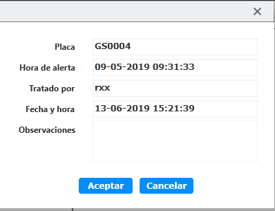

Procesar alerta
Procesar la información de alerta
| 1. | Seleccione la información de alerta en la lista de alertas en la interfaz principal de la alerta del vehículo y haga clic
en el botón 〖 
Fig 47 Ventana de procesamiento de alarma El sistema proporciona automáticamente la información relacionada con el despacho de alerta: número de matrícula, hora de
la alerta, persona de despacho, tiempo de despacho.
La persona de despacho es el usuario de inicio sesión actual y l tiempo de despacho es el tiempo actual del sistema.
|
| 2. | (Opcional) Rellene el motivo de alerta del vehículo y el resultado del despacho en la nota. |
| 3. | Haga clic en 〖Aceptar〗, el despacho de la alerta finaliza. El registro de la alerta se transferirá al registro de consulta historial. |